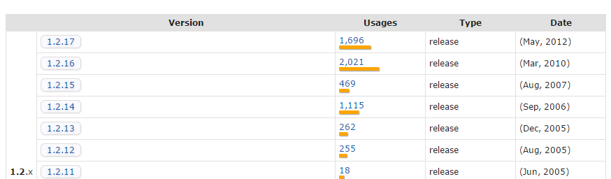
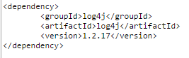

Project Object Model (POM)
Each maven project (java app) has a POM that defines dependencies, repositories, versions, profiles, etc. and the POM file is needed for the application to be built properly.
Updating Pom files
- When updating you usually will start in construction mode
- You won't need to request a feature branch
- Just create a workspace as usual, checkout the trunk branch of where the pom root folder is (Reaf, Common, etc)
- Make your changes and commmit back the trunk, still post a code review
- For code review you only need to enter your trunk version log and not have to enter the previous version to compare to, cc will know what to compare to
<dependencies>
<dependency>
<groupId> org.junit </groupId>
<artifactId> junit </artifactId>
<version> 4.0 </version>
<type> jar </type>
<scope> test </scope>
<dependency>
<dependency>
...
<dependency>
</dependency>
Scope variables
- compile
- provided
- runtime
- test
- system
Adding a dependency
Say you want to add a log4j dependency or library that's not yet in your project
- Open the pom file > go to pom.xml
- google lo4j maven dependency and get to something like this

- Click on any version you want and you get this, then copy/paste to under dependencies

- Save the pom and maven should update your project and add the library jar to maven dependencies
- Important thing to note is the that the version tag is numbered and is visible, otherwise maven will have error reading
- You can also use placeholder/variables to define a version value implemented elsewhere in the pom
- instead of 1.2.17 for the version value you can do something like ${org.aspectj.version}
- In the properties tag <properties> </properties>
- located at the top of the pom, you can define the placeholder
- <org.aspectj.version>1.8.1</org.aspectj.version>
Profiles
Allow you to set different configurations within each application for each type of environment.
How to point an app (Landscaping) to use a local framework branch (Common)
- Have your local common branch open
- Lanscaping > Pom > change common tag version to your local common version
- visit local common > Pom > version > copy that name and paste it into the lanscaping common tag
- Maven update landscaping and landscaping should now be pointing to your local common
- If you check your landscaping Pom > dependencies > you should see a folder by common to indicate you are pointing to local folder of common